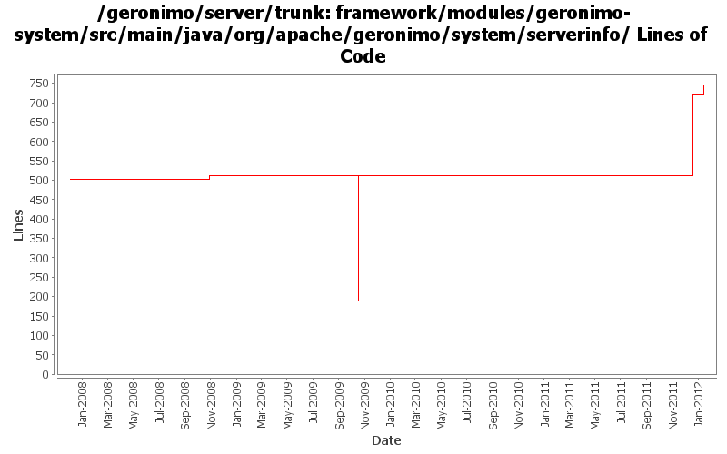

[root]/framework/modules/geronimo-system/src/main/java/org/apache/geronimo/system/serverinfo

| Author | Changes | Lines of Code | Lines per Change |
|---|---|---|---|
| Totals | 21 (100.0%) | 620 (100.0%) | 29.5 |
| djencks | 16 (76.2%) | 577 (93.1%) | 36.0 |
| gawor | 1 (4.8%) | 43 (6.9%) | 43.0 |
| xuhaihong | 2 (9.5%) | 0 (0.0%) | 0.0 |
| jdillon | 2 (9.5%) | 0 (0.0%) | 0.0 |
GERONIMO-6240 karaf and geronimo have opposite meanings of HOME and BASE
16 lines of code changed in 1 file:
GERONIMO-6263 expose command line args from geronimo ServerInfo and use them to feed app client gbean. Not tested
15 lines of code changed in 5 files:
GERONIMO-6240 Make several base geronimo functions (kernel, deployer, etc) DS services and make the car-maven-plugin take advantage of that. Server assembly doesn't work yet, builds framework.
216 lines of code changed in 3 files:
Use the codes from OpenEJB ClassloaderUtils to clean up the jar cache
0 lines of code changed in 2 files:
some more logging updates: 1) use geronimo log4j.properties files to configure logging, 2) expose service to configure logging programtically, 3) remove unused geronimo-logging module
43 lines of code changed in 1 file:
GERONIMO-4916 step 2 move sandbox osgi framework into trunk
321 lines of code changed in 2 files:
GERONIMO-4916 step 1 remove old framwork
0 lines of code changed in 2 files:
GERONIMO-4382 Use plugin installing to create a new server instance in a geronimo installation. Also requires separating boilerplate into the installation and server (var) bits
9 lines of code changed in 1 file:
(GERONIMO-3985) Use SLF4J as the primary logging facade for Geronimo
0 lines of code changed in 2 files:
GERONIMO-3607 Add 'assemble a server' support to geronimo and use it from car-maven-plugin and gshell. Not yet available in the console. Better repository support would be desirable
0 lines of code changed in 2 files: